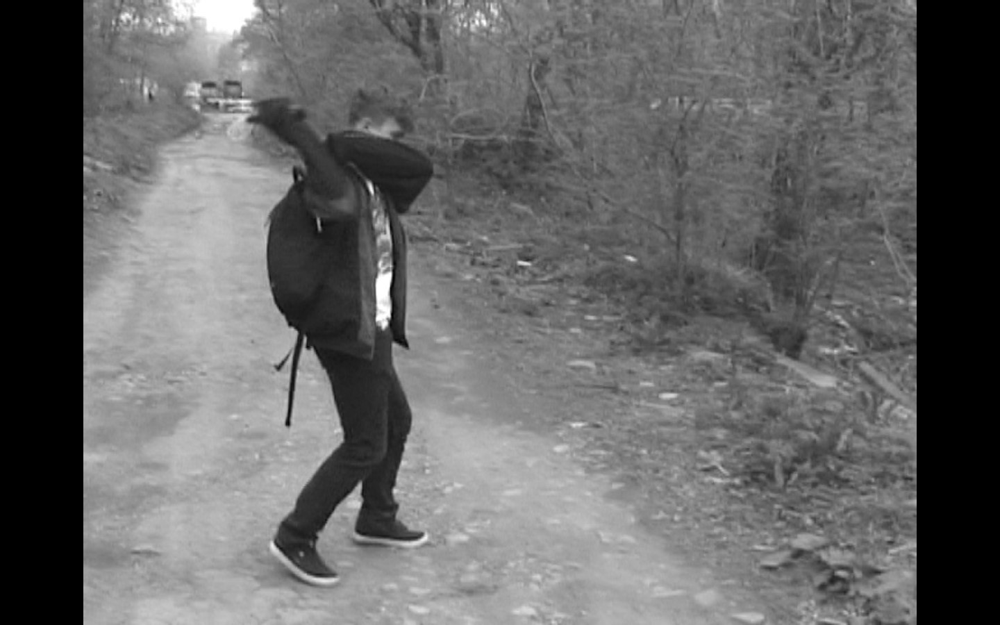
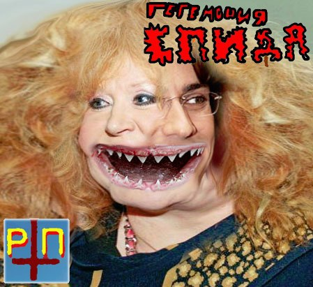
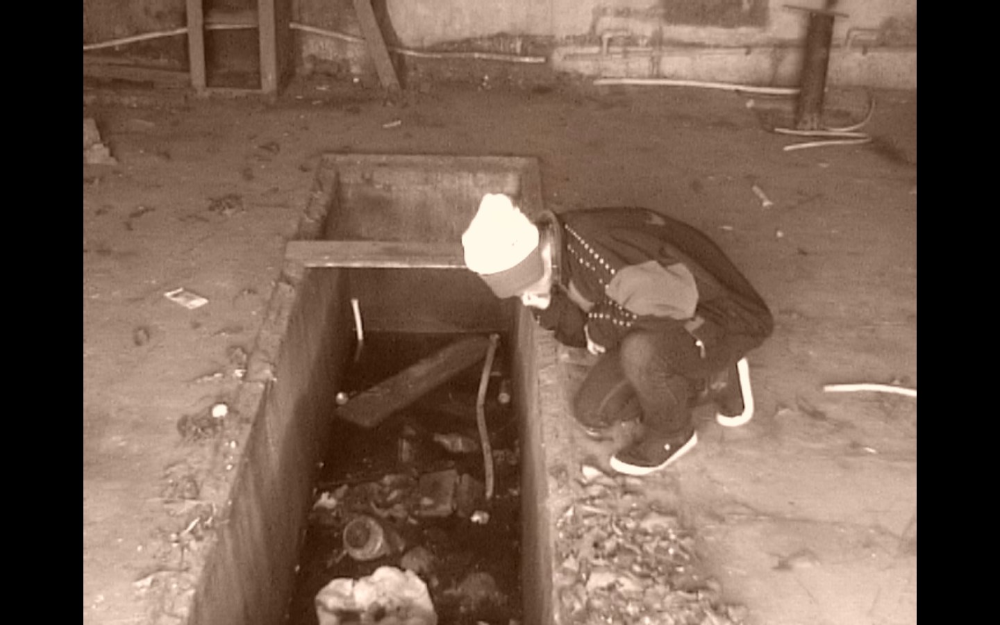
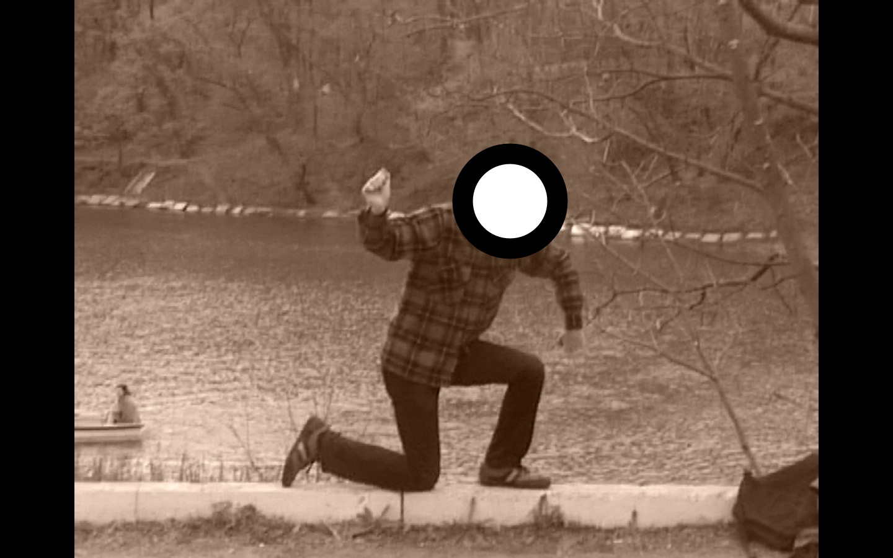
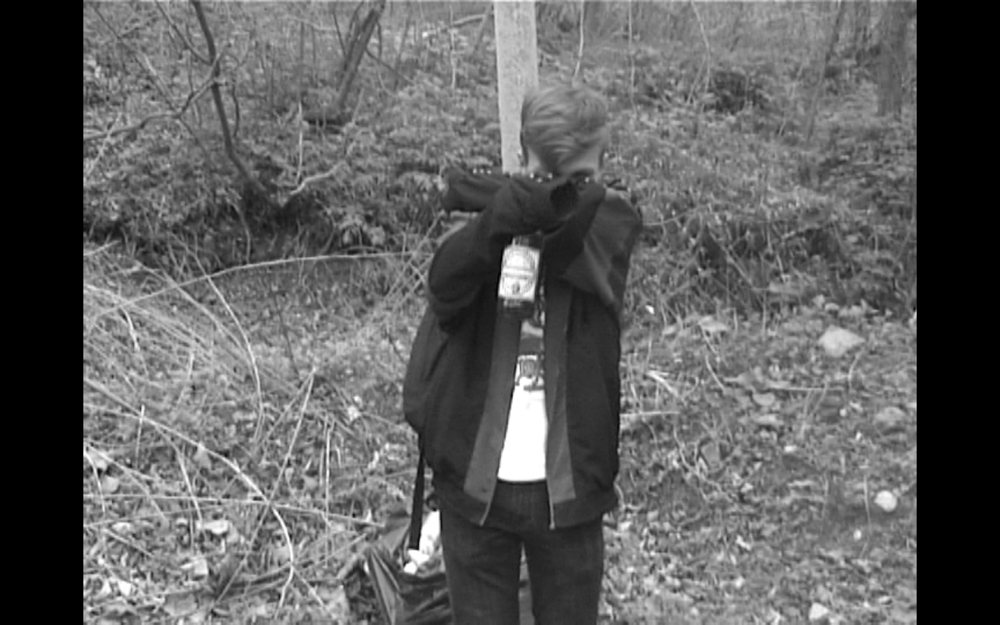

|
ГЕГЕМОНИЯ СПИДА - ОПАСНО ДЛЯ ЖИЗНИ (ИНТЕРВЬЮ)
ГЕГЕМОНИЯ СПИДА - авангардный контр-культурный проект в жанрах harsh noise/noisecore. Образован во Владивостоке в 2015 году. Коллектив отличается узнаваевым, "мозговыносящим" звучанием. Текста повествуют об исторических событиях, острых социальных проблемах и о человеческой сущности в разных её проявлениях.

1. Доброго времени суток! Мне показалось немного загадочным название группы. Что оно означает?
Sweet Leaf: Добрый вечер! Предоставлю Яну возможность ответить на данный вопрос.
Ян Кёртис: Ну, название группы я придумывал, исходя из принципа "чем более ебануто звучит, тем лучше". Но смысл в названии всё же есть — своей музыкой мы хотим показать миру, что будет, если СПИД победит.
2. Ваша музыка больше похожа на нойз, чем на нойзкор. Как вы определились с жанром и значат ли для вас что-нибудь определяющие направления?
Sweet Leaf: Нашей целью было создать как можно более "ядрёно", "мозговыносяще" звучащий материал. Жанр и звучание группы возникли во время игры Яна со одним звуковым редактором. В тот момент у него не было нормального микрофона, а была только веб-камера. Её микрофон отвратительно искажал звук, побаловавшись, он решил записать gore noise-альбом. В таком сильно искаженном виде гроул Яна и попал на альбом. Нам понравилось, и мы решили оставить это как наш фирменный саунд.
Ян Кёртис: Хотелось бы добавить, что изначально планировалось писать исключительно gore noise с элементами power electronics, но потом было решено, что жанр не принципиален — важно звучание, наш фирменный саунд.
3. Ваш проект чисто студийный или уже есть на счету живые выступления?
Ян Кёртис: Лайв готовится, мы отрепетировали несколько треков, выяснили, как это будет звучать вживую, решается вопрос с площадкой.
Sweet Leaf: В скором времени мы планируем провести небольшой нойз-фестиваль - "ФЕСТИВАЛЬ СПИДА". Кроме нашей команды, мы нашли в городе несколько талантливых нойз-коллективов и исполнителей (таких, как radiovolna, Zokhavanie Ktulhu, М. Чертанов и др.). Пока живых выступлений не было, зато в студийной работе мы куда более плодотворны - на нашем счету уже 2 полноценных альбома и более 10 изданий на различных сплитах. Однажды мы даже издались на сборнике вместе с легендарными Agathocles!

4. За что вы так люто ненавидите Аллу Борисовну (ага, ту самую)?
Sweet Leaf: На самом деле наше отношение к ней скорее нейтральное.
За треком "Пугачиха - старая мрась" на самом деле стоит куда более интересная история. Этот трек - кавер на небезызвестную в узком российском сообществе любителей нойза группу "Расчленённая ПугачОва". Она состояла из двух малолетних долбоебов, которые писали примитивнейшую смесь панка с грайндкором и в перерывах между выступлениями совершали кровавые расправы над жителями своего города. С расчленёнкой, издевательствами и т.п. Происходило это в период с 2010 по 2011 год, потом их раскрыли и посадили на бутылку(зачеркнуто) на пожизненное. Они были практически главными звёздами русской ной-тусовки, и с тех пор каждый год выходит трибьют этой группе. Мы решили участвовать в пятом, юбилейном трибьюте, и для этого записали кавер на одну из наших любимых песен "Расчленённой ПугачОвы". Тогда уже следует добавить, что изначально эта нойз-тусовка создавалась как антипоп-рок движение. Называлась она "Попсакал".
Ян Кёртис: Насчёт нейтральности не соглашусь, поскольку российская поп-сцена не отличается талантами, честно говоря. Лучше бы мы вместо них выступали.
Sweet Leaf: Тогда уже следует добавить, что изначально эта нойз-тусовка создавалась как антипоп-рок движение. Называлась она "Попсакал".
5. Каково ваше отношение к тому, что называют современной поп-музыкой? Нет ли такой мысли, что мир давно прогнил и все ценности крутятся только вокруг сисек, денег и крутых тачек?
Sweet Leaf: Если быть верным духу старого "Попсакала", то попса это отстойнейшее дерьмо, отрыжка человеческого общества! Разумеется, по формату, по звучанию, по темам наша музыка максимально противопоставляет себя массовой культуре. Мы всегда в андеграунде, и я сомневаюсь, что когда-либо концерты нойз-групп будут собирать стадионы - не тот формат.
Ян Кёртис : Наша позиция по поводу современной поп-музыки однозначна — попса есть дичайшая богомерзкая хуйня! А особенно парашны такие исполнители, как "нюша", "потап и настя каменских". Они должны устраивать концерты максимум в газовых камерах. Насчёт мыслей о мире. У нас весьма вульгарные названия песен и текста, тем самым мы выражаем протест материализму. Люди забывают, что мир заключается не только в крутых машинах, бабках, сиськах. Существуют духовные ценности, без которой человек — просто животное. Мы хотим привлечь внимание к этому.

6. Вы - уникальный проект с неповторимым звучанием. Помимо слушателей, наверняка у вас есть хэйтеры. Как вы относитесь к негативным выпадам в свой адрес? Не возникает ли желания отправить на хутор за бабочками?
Sweet Leaf: Во многом наша музыка рассчитана на то, чтобы вызвать негативные эмоции у слушателя, это наш способ выразить творческий посыл. Поэтому к лютой ненависти, недоумению, оскорблениям в наш адрес мы относимся крайне положительно. Впрочем, многим наше творчество нравится. Кто-то считает его смешным. Кому-то нравится слушать наши треки по накурке или закинувшись чем-то покрепче. Есть истинные ценители жанра, которые очень котируют наш коллектив - пожалуй, ими мы дорожим больше всего.
Ян Кёртис : К хейтерам относимся крайне положительно. Мы представители контркультуры, к тому же, у нас довольно циничные треки, поэтому какая-нибудь охапка моралфагов — обычное дело.
(несмотря на это, я искренне желаю, чтобы все они подцепили спидак).
7. Относите ли вы себя к представителям андеграунда?
Sweet Leaf: Как я уже выше говорил - да! Агрессивные поджанры нойза никогда не выйдут из андеграунда - впрочем, нам это и не нужно. Как вы представляете себе толпу подростков, трясущих своими пустыми башками под аритмичные, неприятные, просто отвратительные шумы?Хотя... Я уже смог представить это в своей голове. Кто знает, может мы сможем вывести культуру в мейнстрим?
Ян Кёртис : Да, безусловно. Нойзкор и производные ему жанры не предназначены для прослушивания обывалами и никогда не будут популярны среди масс. Ценителей отборного шума всегда будет меньше любителей попсы.
 8. Расскажите о съемках клипа "Исламское государство".
8. Расскажите о съемках клипа "Исламское государство".
Версия Sweet Leaf: О, это очень интересная история!
Я нашел у себя на антресолях старую кассетную камеру. И я понял, что такое добро не может пропасть зря!
Мы облазили окрестные помойки, логова бомжей (там я нашел свою девушку, кстати) и чердаки наших родителей и нашли просто НАПИЗДООХУЕННЕЙШИЙ реквизит! Я позвонил Яну, и мы сорвались в самое отбросное, самое бичовское и самое заброшенное место нашего города - Парк Минного городка.
Нашей целью было наснимать всякой жести. Что мы и сделали. От души поразвлекались - повисели в "Столыпинских галстуках", поссали в заброшках, избили девушку Яна. По возвращению домой я стал выбирать трек и решил, что "ИСЛАМСКОЕ ГОСУДАРСТВО ОБОГНАЛО ПО УРОВНЮ ЖИЗНИ СРАНУЮ РАШКУ" - самый подходящий вариант. За пару часов смонтировал и выложил.
А ещё у Яна хуй пятнашка см  . .
Версия Яна: Решили мы как-то снять клип. Ну а хули, стильно, модно, молодёжно, к тому же, видеоряд выражает куда больше эмоций, нежели просто аудио. Мы думали насчёт места съёмок: нам нужно было самое засранное место во Владивостоке. На дальхимпром мы ехать не решились, поэтому был выбран Минный городок. Мы начали снимать трешак, но камеру мы использовали кассетную, что позволило придать клипу свою изюминку. Реквизит мы использовали очень простенький — шмотьё, которое ассоциировалось с девяностыми.
Весльма смелым шагом с моей стороны было взять с собой девушку, но я не пожалел об этом. Было весело, в общем.
9. Алексей Рацсхаллаев - " Как можно было начать играть такое говно? "
Ян Кёртис : Да охуенная музыка, чо ты. А вообще нам было нехуй делать, ну так и получилось. Первый альбом я нахуярил за 3 дня.
Sweet Leaf: Честно признаюсь - в основном Ян определил наш саунд. Он возник в результате несовершенства аппаратуры (отвратительный микрофон веб-камеры) и намеренных жестчайших перегрузов (овердрайв с клиппингом). Он решил побаловаться с этой адской смесью, и нам понравился результат.
10. Алексей Рацсхаллаев - " Харш, Нойз, чё там еще?"
Sweet Leaf: Жанры: harsh noise, gore noise, noisecore.
Ян Кёртис : Харш-хуярш, жанр не слишком принципиален, повторюсь.
Sweet Leaf : иди нахуй, Ян! Хотя ты прав. Я сейчас вон прорабатываю концепт нойз-панк/нойзкор/нойзграйнд альбома ГЕГЕМОНИИ.

11. По поводу клипа - вы не боялись, что определенные радикально настроенные граждане потребуют забить вас камнями на главной площади города или отрезать головы?
Sweet Leaf: Мы ничего не боялись! В один момент я даже встал в позу свастики на людном месте - прямо на пешеходной дорожке возле озера!Никто ни слова и не сказал. Либо люди не против, либо они - загнанные, боящиеся выразить своё мнение, живущие в страхе скоты.
Ян Кёртис : Да похуй ваще, в наших реалиях больше стоит бояться спецслужб, нежели обывал.
12. И снова...Алексей Рацсхаллаев - " Кому нахуй нужны исполнители играющие в родственном вам жанре?"
Sweet Leaf: Повторюсь, мы в андеграунде.
Но пускай посмотрит, сколько народу собирают Merzbow, Gerogerigegege или фестиваль OEF - там есть элементы нойз-музыки.
13. Алексей Рацсхаллаев - " А вы говно употребляете?"
Sweet Leaf: Следует отличать искусство и сексуальные фетиши. Впрочем, некоторые их совмещают - например, недавно удачно давшая гастроли в Мексике группа Anal Grind.
Ян Кёртис : Нет, не едим, разве что играем.

14. Что вы думаете о нойз-сцене Владивостока?
Ян Кёртис : Ее почти нет. Божественна,короче.
Sweet Leaf: Нойз-сцена Владивостока скорее мертва, чем жива. Впрочем, стоит отметить некоторые проекты.
Мне очень нравится проект моего друга "Zohavanie Ktulhu". Единственный релиз, "Zayebis' pizdatyi EP", относится к 2014 году. Целью музыкант ставил "насрать своей бывшей в уши". Впрочем, треками "PUGACHEVA IS GAY" и "First Internal Torment bassist sucks" я заслушиваюсь до сих пор.
Другой проект- radiovolna. Пилит его какой-то очень взрослый дядька. Это что-то в духе дроуна - 10-минутные треки с однообразными ненавязчивыми шумами. Пожалуй, расслабляет.
Есть наши сайд-проекты - такие, как "Поезд Москва-Плутон" (ритм-нойз с обильным использованием перегрузов). По секрету скажу, что есть в нашем городе уникальный музыкант, творящий в жанре фарт-нойза. Он выпустил альбом, на 100% состоящий из пердежа! Я когда первый раз его послушал, чуть не задохнулся. Он говорит, что вдохновляется Жозефом Пужолем (это такой французский метеорист конца позапрошлого века).
15. Что за проект?
Sweet Leaf: Проект называется "Joseph Pujol in Outer Space", если мне не изменяет память. Понюхаете(зачеркнуто) послушаете на досуге.
16. Пару слов на прощание...
Ян Кёртис : Скоро будет фестиваль спида, и любой желающий сможет прийти туда, возможно, даже наблевать на сцену.
|